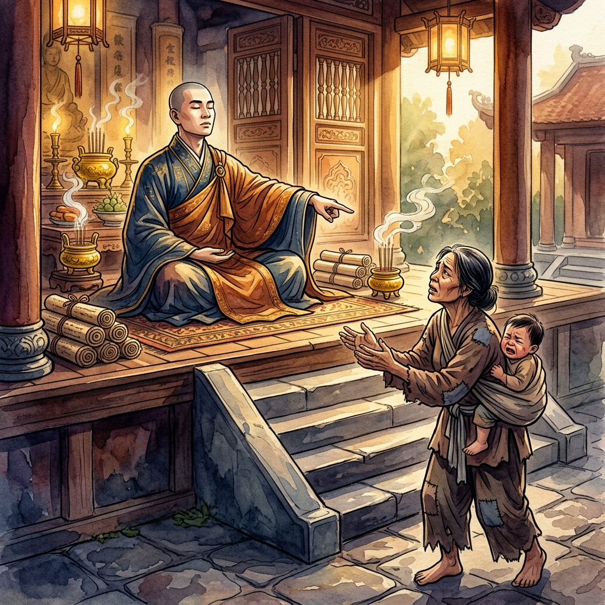
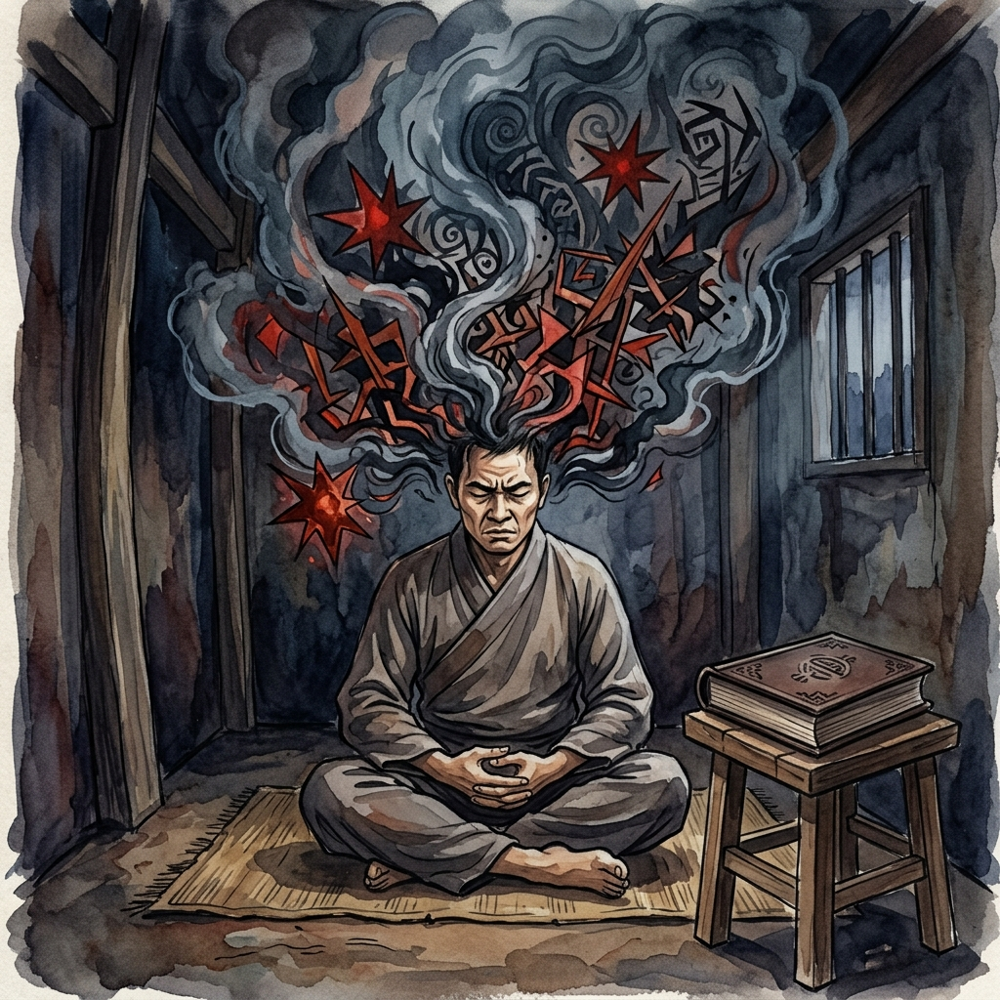
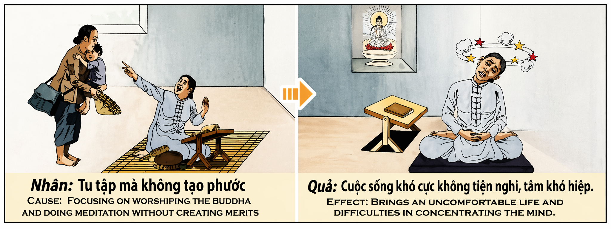

La Espiritualidad Vacía de Compasión
"El mérito no se encuentra en el aislamiento del rezo, sino en la mano que se extiende para aliviar el sufrimiento ajeno."
El camino espiritual es a menudo malinterpretado como una huida del mundo, un refugio donde el individuo busca su propia paz ignorando el ruido del dolor ajeno. Sin embargo, la ley del karma nos enseña que no existe una elevación real del alma si esta se desconecta de la compasión activa. El conocimiento sagrado, los rituales y la meditación son solo herramientas; si se usan para alimentar el orgullo de sentirse "más puro" o "más santo" que los demás, se convierten en una jaula dorada. La verdadera espiritualidad es un puente, no un muro.
El "mérito" (phước) es el cimiento invisible sobre el cual se construye la estabilidad de la mente. Sin actos de bondad y servicio, la mente carece de la sustancia necesaria para permanecer en calma. Cuando una persona rechaza a quien necesita ayuda con la excusa de proteger su "práctica espiritual", está sembrando una semilla de egoísmo profundamente sutil. El universo devuelve esta vibración en forma de inquietud mental: la incapacidad de concentrarse, mareos espirituales y un vacío que ningún libro sagrado puede llenar. La paz no se puede alcanzar si se ha pisoteado la paz de otros para obtenerla.
El "antes" de este karma es una vida dedicada al estudio o al rezo formal, pero marcada por la frialdad emocional y el desprecio hacia lo mundano. El "después" es la paradoja del buscador atormentado: rodeado de símbolos sagrados, el individuo sufre de una mente caótica que gira sin descanso, impidiéndole saborear la serenidad que tanto anhelaba. Para alinear nuestra vida con el propósito divino, debemos comprender que cada oportunidad de ayudar es un regalo del karma para fortalecer nuestra propia luz. Solo aquel que sirve con amor puede encontrar, finalmente, la quietud absoluta en su propio corazón.
The spiritual path is often misinterpreted as an escape from the world, a refuge where the individual seeks their own peace while ignoring the noise of others' pain. However, the law of karma teaches us that there is no real elevation of the soul if it disconnects from active compassion. Sacred knowledge, rituals, and meditation are only tools; if they are used to feed the pride of feeling "purer" or "holier" than others, they become a golden cage. True spirituality is a bridge, not a wall.
"Merit" (phước) is the invisible foundation upon which the stability of the mind is built. Without acts of kindness and service, the mind lacks the necessary substance to remain calm. When a person rejects someone in need under the excuse of protecting their "spiritual practice," they are sowing a seed of deeply subtle selfishness. The universe returns this vibration in the form of mental unrest: the inability to concentrate, spiritual dizziness, and a void that no sacred book can fill. Peace cannot be achieved if the peace of others has been trampled upon to obtain it.
The "before" of this karma is a life dedicated to study or formal prayer, but marked by emotional coldness and contempt for the mundane. The "after" is the paradox of the tormented seeker: surrounded by sacred symbols, the individual suffers from a chaotic mind that spins restlessly, preventing them from savoring the serenity they so longed for. To align our lives with the divine purpose, we must understand that every opportunity to help is a gift from karma to strengthen our own light. Only the one who serves with love can finally find absolute stillness in their own heart.
Il cammino spirituale è spesso frainteso come una fuga dal mondo, un rifugio dove l'individuo cerca la propria pace ignorando il rumore del dolore altrui. Tuttavia, la legge del karma ci insegna che non esiste una reale elevazione dell'anima se questa si disconnette dalla compassione attiva. La conoscenza sacra, i rituali e la meditazione sono solo strumenti; se vengono usati per alimentare l'orgoglio di sentirsi "più puri" o "più santi" degli altri, diventano una gabbia dorata. La vera spiritualità è un ponte, non un muro.
Il "merito" (phước) è il fondamento invisibile su cui si costruisce la stabilità della mente. Senza atti di bontà e servizio, la mente manca della sostanza necessaria per rimanere calma. Quando una persona rifiuta chi ha bisogno di aiuto con la scusa di proteggere la propria "pratica spirituale", sta seminando un seme di egoismo profondamente sottile. L'universo restituisce questa vibrazione sotto forma di inquietudine mentale: l'incapacità di concentrarsi, vertigini spirituali e un vuoto che nessun libro sacro può colmare. La pace non può essere raggiunta se è stata calpestata la pace degli altri per ottenerla.
L'"antes" di questo karma è una vita dedicata allo studio o alla preghiera formale, ma segnata dalla freddezza emotiva e dal disprezzo verso il mondano. Il "depués" è il paradosso del cercatore tormentato: circondato da simboli sacri, l'individuo soffre di una mente caotica che gira senza sosta, impedendogli di assaporare la serenità che tanto desiderava. Per allineare la nostra vita allo scopo divino, dobbiamo capire che ogni opportunità di aiutare è un dono del karma per rafforzare la nostra stessa luce. Solo colui che serve con amore può trovare, finalmente, la quiete assoluta nel proprio cuore.
精灵之路常被误解为逃避世界，是一个让个人在忽视他人痛苦的喧嚣中寻求自身平静的避难所。然而，业力法则告诉我们，如果灵魂脱离了积极的慈悲，就不会有真正的提升。神圣的知识、仪式和冥想仅仅是工具；如果它们被用来滋养一种比他人“更纯净”或“更神圣”的自豪感，它们就会变成一个金色的囚笼。真正的灵性是桥梁，而不是墙壁。
“功德”（phước）是建立思想稳定性的无形基础。如果没有善行和服务，思想就缺乏保持冷静所需的物质。当一个人以保护自己的“修行”为借口拒绝需要帮助的人时，他正在播下一颗极度微妙的自私种子。宇宙以精神不安的形式回馈这种振动：无法集中注意力、灵性眩晕以及任何神圣书籍都无法填补的空虚。如果为了获得平静而践踏了他人的平静，那么这种平静是无法实现的。
这种业力的“前因”是致力于学习或形式化祈祷的生活，但其特点是情感冷漠和对尘世的蔑视。“后果”是受折磨的寻求者的悖论：被神圣符号包围，个人却承受着不断旋转、混乱的思想，使他们无法品尝到梦寐以求的宁静。为了使我们的生活与神圣的使命保持一致，我们必须明白，每一次提供帮助的机会都是业力为了增强我们自身光芒而赐予的礼物。只有那些用爱服务的人，最终才能在自己的心中找到绝对的宁静。
غالباً ما يُساء فهم الطريق الروحي على أنه هروب من العالم، ملجأ يسعى فيه الفرد لتحقيق سلامه الخاص متجاهلاً ضجيج آلام الآخرين. ومع ذلك، يعلمنا قانون الكرمة أنه لا يوجد ارتقاء حقيقي للروح إذا انفصلت عن الرحمة النشطة. المعرفة المقدسة والطقوس والتأمل ليست سوى أدوات؛ إذا استُخدمت لتغذية كبرياء الشعور بالكون "أنقى" أو "أقدس" من الآخرين، فإنها تصبح قفصاً ذهبياً. الروحانية الحقيقية هي جسر وليست جداراً.
"الفضل" أو "الجدارة" (phước) هو الأساس غير المرئي الذي يُبنى عليه استقرار العقل. بدون أعمال الخير والخدمة، يفتقر العقل إلى الجوهر اللازم للبقاء هادئاً. عندما يرفض شخص ما من يحتاج المساعدة بذريعة حماية "ممارسته الروحية"، فإنه يزرع بذرة من الأنانية الخفية للغاية. يعيد الكون هذا الاهتزاز في شكل قلق عقلي: عدم القدرة على التركيز، ودوار روحي، وفراغ لا يمكن لأي كتاب مقدس أن يملأه. لا يمكن تحقيق السلام إذا تم سحق سلام الآخرين للحصول عليه.
إن "ما قبل" هذه الكرمة هو حياة مكرسة للدراسة أو الصلاة الشكلية، ولكنها تتسم بالبرود العاطفي وازدراء الأمور الدنيوية. أما "ما بعد" فهو مفارقة الباحث المعذب: المحاط بالرموز المقدسة، يعاني الفرد من عقل فوضوي يدور بلا هوادة، مما يمنعه من تذوق السكينة التي كان يتوق إليها. لكي نوائم حياتنا مع الغرض الإلهي، يجب أن نفهم أن كل فرصة للمساعدة هي هدية من الكرمة لتقوية نورنا الخاص. فقط أولئك الذين يخدمون بحب يمكنهم أخيراً العثور على السكون المطلق في قلوبهم.
Духовный путь часто ошибочно истолковывают как бегство от мира, убежище, где человек ищет собственного покоя, игнорируя шум чужой боли. Однако закон кармы учит нас, что не существует истинного возвышения души, если она отделена от деятельного сострадания. Священные знания, ритуалы и медитация — это лишь инструменты; если они используются для подпитки гордыни от чувства собственной «чистоты» или «святости» по сравнению с другими, они превращаются в золотую клетку. Истинная духовность — это мост, а не стена.
«Заслуга» (phước) — это невидимый фундамент, на котором строится стабильность ума. Без добрых дел и служения уму не хватает субстанции, необходимой для сохранения спокойствия. Когда человек отказывает нуждающемуся в помощи под предлогом защиты своей «духовной практики», он сеет семя глубоко утонченного эгоизма. Вселенная возвращает эту вибрацию в виде ментального беспокойства: неспособности сосредоточиться, духовного головокружения и пустоты, которую не может заполнить ни одна священная книга. Мир не может быть достигнут, если ради него был попран мир других.
«До» этой кармы — это жизнь, посвященная изучению или формальной молитве, но отмеченная эмоциональной холодностью и презрением к мирскому. «После» — это парадокс измученного искателя: окруженный священными символами, человек страдает от хаотичного ума, который неустанно вращается, мешая ему вкусить безмятежность, к которой он так стремился. Чтобы привести нашу жизнь в соответствие с божественной целью, мы должны понять, что каждая возможность помочь — это дар кармы для укрепления нашего собственного света. Только тот, кто служит с любовью, может, в конце концов, обрести абсолютную тишину в собственном сердце.
Der spirituelle Weg wird oft fälschlicherweise als Flucht aus der Welt missverstanden, als eine Zuflucht, in der der Einzelne seinen eigenen Frieden sucht, während er den Lärm des Schmerzes anderer ignoriert. Das Gesetz des Karma lehrt uns jedoch, dass es keine wirkliche Erhebung der Seele gibt, wenn sie sich vom aktiven Mitgefühl trennt. Heiliges Wissen, Rituale und Meditation sind nur Werkzeuge; wenn sie dazu benutzt werden, den Stolz zu nähren, sich „reiner“ oder „heiliger“ als andere zu fühlen, werden sie zu einem goldenen Käfig. Wahre Spiritualität ist eine Brücke, keine Mauer.
„Verdienst“ (phước) ist das unsichtbare Fundament, auf dem die Stabilität des Geistes aufgebaut ist. Ohne Taten der Güte und des Dienstes fehlt dem Geist die notwendige Substanz, um ruhig zu bleiben. Wenn ein Mensch jemanden, der Hilfe braucht, mit der Entschuldigung abweist, seine „spirituelle Praxis“ zu schützen, sät er einen Samen von zutiefst subtilem Egoismus. Das Universum gibt diese Schwingung in Form von geistiger Unruhe zurück: die Unfähigkeit zur Konzentration, spiritueller Schwindel und eine Leere, die kein heiliges Buch füllen kann. Frieden kann nicht erreicht werden, wenn der Frieden anderer mit Füßen getreten wurde, um ihn zu erlangen.
Das „Vorher“ dieses Karma ist ein Leben, das dem Studium oder dem formalen Gebet gewidmet ist, aber von emotionaler Kälte und Verachtung für das Weltliche geprägt ist. Das „Nachher“ ist das Paradoxon des gequälten Suchers: Umgeben von heiligen Symbolen leidet das Individuum an einem chaotischen Geist, der sich unaufhörlich dreht und ihn daran hindert, die Gelassenheit zu genießen, nach der er sich so sehr sehnte. Um unser Leben auf die göttliche Bestimmung auszurichten, müssen wir verstehen, dass jede Gelegenheit zu helfen ein Geschenk des Karma ist, um unser eigenes Licht zu stärken. Nur wer mit Liebe dient, kann schließlich die absolute Stille im eigenen Herzen finden.
Le chemin spirituel est souvent mal interprété comme une fuite du monde, un refuge où l'individu cherche sa propre paix en ignorant le bruit de la douleur d'autrui. Cependant, la loi du karma nous enseigne qu'il n'existe pas d'élévation réelle de l'âme si celle-ci se déconnecte de la compassion active. Les connaissances sacrées, les rituels et la méditation ne sont que des outils ; s'ils sont utilisés pour nourrir l'orgueil de se sentir « plus pur » ou « plus saint » que les autres, ils deviennent une cage dorée. La véritable spiritualité est un pont, pas un mur.
Le « mérite » (phước) est le fondement invisible sur lequel se construit la stabilité de l'esprit. Sans actes de bonté et de service, l'esprit manque de la substance nécessaire pour rester calme. Lorsqu'une personne rejette quelqu'un qui a besoin d'aide sous prétexte de protéger sa « pratique spirituelle », elle sème une graine d'égoïsme profondément subtile. L'univers renvoie cette vibration sous forme d'agitation mentale : incapacité à se concentrer, vertiges spirituels et un vide qu'aucun livre sacré ne peut combler. La paix ne peut être atteinte si la paix des autres a été piétinée pour l'obtenir.
L'« avant » de ce karma est une vie consacrée à l'étude ou à la prière formelle, mais marquée par la froideur émotionnelle et le mépris du temporel. L'« après » est le paradoxe du chercheur tourmenté : entouré de symboles sacrés, l'individu souffre d'un esprit chaotique qui tourne sans relâche, l'empêchant de savourer la sérénité qu'il désirait tant. Pour aligner notre vie sur la mission divine, nous devons comprendre que chaque occasion d'aider est un cadeau du karma pour renforcer notre propre lumière. Seul celui qui sert avec amour peut enfin trouver le calme absolu dans son propre cœur.
霊的な道は、しばしば世界からの逃避、他人の苦しみの騒音を無視して個人の平穏を求める避難所であると誤解されます。しかし、カルマの法則は、活動的な慈悲から切り離された魂には本当の向上はあり得ないことを教えています。神聖な知識、儀式、瞑想は単なる道具に過ぎません。もしそれらが他人よりも「純粋である」とか「聖なるものである」という誇りを養うために使われるならば、それらは黄金の檻となります。真の精神性は壁ではなく、橋なのです。
「徳」（phước）は、心の安定が築かれる目に見えない基礎です。善行や奉仕がなければ、心は穏やかさを保つために必要な実体を欠くことになります。「精神修行」を守るという口実で助けを必要とする人を拒むとき、その人は極めて微妙な利己主義の種をまいているのです。宇宙はこの振動を精神的な不安という形で返します。集中力の欠如、霊的なめまい、そしていかなる聖典も埋めることのできない空虚感です。他人の平和を踏みにじって得ようとした平和は、決して達成されることはありません。
このカルマの「前」は、学習や形式的な祈りに捧げられた人生ですが、感情的な冷淡さと世俗的なものへの軽蔑に満ちています。その「後」は、苦悩する探求者のパラドックスです。神聖な象徴に囲まれながら、絶え間なく回転する混沌とした心に苦しみ、切望していた静寂を味わうことができません。私たちの人生を神聖な目的と一致させるためには、助けの手を差し伸べるあらゆる機会が、私たち自身の光を強めるためのカルマからの贈り物であることを理解しなければなりません。愛を持って仕える者だけが、最終的に自らの心の中に絶対的な静寂を見出すことができるのです。
O caminho espiritual é frequentemente mal interpretado como uma fuga do mundo, um refúgio onde o indivíduo procura a sua própria paz ignorando o ruído da dor alheia. No entanto, a lei do carma ensina-nos que não existe uma elevação real da alma se esta se desconecta da compaixão ativa. O conhecimento sagrado, os rituais e a meditação são apenas ferramentas; se forem usados para alimentar o orgulho de se sentir "mais puro" ou "mais santo" do que os outros, tornam-se uma gaiola dourada. A verdadeira espiritualidade é uma ponte, não um muro.
O "mérito" (phước) é o alicerce invisível sobre o qual se constrói a estabilidade da mente. Sem atos de bondade e serviço, a mente carece da substância necessária para permanecer em calma. Quando uma pessoa rejeita quem precisa de ajuda com a desculpa de proteger a sua "prática espiritual", está a semear uma semente de egoísmo profundamente subtil. O universo devolve esta vibração sob a forma de inquietação mental: a incapacidade de se concentrar, tonturas espirituais e um vazio que nenhum livro sagrado pode preencher. A paz não pode ser alcançada se a paz de outros foi pisoteada para a obter.
O "antes" deste carma é uma vida dedicada ao estudo ou à oração formal, mas marcada pela frieza emocional e pelo desprezo pelo mundano. O "depois" é o paradoxo do buscador atormentado: rodeado de símbolos sagrados, o indivíduo sofre de uma mente caótica que gira sem descanso, impedindo-o de saborear a serenidade que tanto ansiava. Para alinhar a nossa vida com o propósito divino, devemos compreender que cada oportunidade de ajudar é um presente do carma para fortalecer a nossa própria luz. Só aquele que serve com amor pode encontrar, finalmente, a quietude absoluta no seu próprio coração.
Con đường tâm linh thường bị hiểu lầm là sự trốn tránh thế gian, một nơi ẩn náu nơi cá nhân tìm kiếm sự bình an của riêng mình mà lờ đi nỗi đau của người khác. Tuy nhiên, luật nhân quả dạy chúng ta rằng không có sự thăng hoa thực sự nào của tâm hồn nếu nó tách rời khỏi lòng từ bi tích cực. Kiến thức thiêng liêng, các nghi lễ và thiền định chỉ là công cụ; nếu chúng được sử dụng để nuôi dưỡng lòng kiêu hãnh vì cảm thấy mình "trong sạch" hay "thánh thiện" hơn người khác, chúng sẽ trở thành một chiếc lồng vàng. Tâm linh thực sự là một chiếc cầu, không phải là một bức tường.
"Phước báu" (merit) là nền tảng vô hình xây dựng nên sự ổn định của tâm trí. Nếu không có những hành động nhân ái và phụng sự, tâm trí sẽ thiếu đi chất liệu cần thiết để giữ bình lặng. Khi một người từ chối người cần giúp đỡ với cái cớ để bảo vệ "việc tu tập" của mình, người đó đang gieo mầm mống của sự ích kỷ cực kỳ tinh vi. Vũ trụ trả lại rung động này dưới dạng tâm trí bất an: mất khả năng tập trung, chóng mặt tâm linh và một khoảng trống mà không cuốn sách thiêng liêng nào có thể lấp đầy. Sự bình an không thể đạt được nếu sự bình an của người khác đã bị chà đạp để có được nó.
Cái "trước" của nghiệp này là một cuộc sống cống hiến cho việc học hỏi hoặc cầu nguyện hình thức, nhưng lại nhuốm màu sự lạnh lùng về cảm xúc và sự khinh miệt đối với thế gian. Cái "sau" là nghịch lý của một người tìm kiếm bị dằn vặt: được bao quanh bởi các biểu tượng thiêng liêng, cá nhân đó lại phải chịu đựng một tâm trí hỗn loạn không ngừng xoay chuyển, ngăn cản họ nếm trải sự tĩnh lặng mà họ hằng khao khát. Để điều chỉnh cuộc sống theo mục đích thiêng liêng, chúng ta phải hiểu rằng mỗi cơ hội giúp đỡ là một món quà từ nghiệp để củng cố ánh sáng của chính mình. Chỉ có người phụng sự bằng tình yêu mới có thể cuối cùng tìm thấy sự tĩnh lặng tuyệt đối trong trái tim mình.
El Monje del Corazón de Cristal
Hubo una vez un monje llamado Tenzin que vivía en un templo majestuoso en lo alto de una montaña. Tenzin era famoso por su rigurosa disciplina; pasaba días enteros en meditación profunda y noches estudiando los antiguos sutras bajo la luz de una vela de sándalo. Para Tenzin, el mundo exterior era una distracción llena de impurezas que debían evitarse a toda costa. Un día, durante una tormenta de nieve feroz, una mujer con un niño enfermo llamó a las puertas del templo pidiendo cobijo y una taza de caldo caliente. Tenzin, que estaba en medio de un importante ritual de purificación, no quiso interrumpir sus cánticos. Con un gesto frío y sin abrir siquiera los labios, señaló el camino de regreso al valle, creyendo que su deber sagrado estaba por encima de la miseria humana.
Con el tiempo, Tenzin acumuló grandes honores y fue considerado un maestro en las artes espirituales. Sin embargo, algo extraño comenzó a sucederle: cada vez que cerraba los ojos para meditar, su mente se convertía en un remolino de imágenes inconexas y estrellas rojas que le hacían sentir un vértigo insoportable. Los mantras que antes le daban paz ahora sonaban como ruidos metálicos en sus oídos. A pesar de estar rodeado de la mayor comodidad y respeto, su interior era una celda de agitación constante. Tenzin buscó la causa en sus libros, aumentó sus horas de ayuno y cambió sus posturas, pero la paz se alejaba de él como el agua que se escapa entre los dedos, dejándolo en un estado de desasosiego que rayaba en la locura.
Una noche, en un sueño lúcido, Tenzin se vio a sí mismo sentado en su trono de oro, pero su cuerpo era de cristal transparente y estaba lleno de grietas. En el centro de su pecho, donde debería estar su corazón, no había nada más que un espacio vacío por donde soplaba un viento helado. Una voz suave, que recordaba al llanto de un niño, le susurró: "Has buscado la luz en los techos de los templos, pero la has negado en la tierra de los hombres. El conocimiento que posees es una carga que te hunde, porque no tiene el peso del amor para anclarlo en la Verdad. Tu mente no encuentra quietud porque tu alma no encuentra mérito". Tenzin despertó temblando, dándose cuenta de que su búsqueda de perfección lo había convertido en el ser más imperfecto: un hombre con sabiduría pero sin bondad.
Tenzin dejó sus ropajes de seda, cerró sus libros y bajó de la montaña para siempre. Pasó el resto de sus días trabajando en los campos de los pobres, lavando las heridas de los leprosos y compartiendo su pan con los que no tenían nada. No volvió a realizar rituales grandiosos ni a exigir silencio absoluto. Un atardecer, mientras sostenía la mano de un anciano moribundo en una choza humilde, Tenzin sintió de repente que el torbellino en su cabeza se detenía por completo. Una claridad radiante y silenciosa inundó su ser, una paz que nunca había encontrado en sus décadas de aislamiento. Comprendió entonces la lección más sagrada del karma: que el propósito del espíritu no es brillar solo en la cima, sino ser la antorcha que ilumina el camino de los demás en la oscuridad del valle.
There was once a monk named Tenzin who lived in a majestic temple high on a mountain. Tenzin was famous for his rigorous discipline; he spent entire days in deep meditation and nights studying ancient sutras by the light of a sandalwood candle. For Tenzin, the outside world was a distraction full of impurities to be avoided at all costs. One day, during a fierce blizzard, a woman with a sick child knocked on the temple doors asking for shelter and a cup of warm broth. Tenzin, who was in the middle of an important purification ritual, did not want to interrupt his chants. With a cold gesture and without even opening his lips, he pointed the way back to the valley, believing that his sacred duty was above human misery.
Over time, Tenzin accumulated great honors and was considered a master in the spiritual arts. However, something strange began to happen to him: every time he closed his eyes to meditate, his mind became a whirlpool of disconnected images and red stars that made him feel an unbearable vertigo. The mantras that once gave him peace now sounded like metallic noises in his ears. Despite being surrounded by the greatest comfort and respect, his interior was a cell of constant agitation. Tenzin sought the cause in his books, increased his hours of fasting, and changed his postures, but peace moved away from him like water escaping through fingers, leaving him in a state of restlessness that bordered on madness.
One night, in a lucid dream, Tenzin saw himself sitting on his golden throne, but his body was of transparent crystal and was full of cracks. In the center of his chest, where his heart should be, there was nothing but an empty space through which an icy wind blew. A soft voice, reminiscent of a child's cry, whispered to him: "You have sought the light on the roofs of temples, but you have denied it on the earth of men. The knowledge you possess is a burden that sinks you, because it does not have the weight of love to anchor it in Truth. Your mind finds no stillness because your soul finds no merit." Tenzin woke up trembling, realizing that his search for perfection had turned him into the most imperfect being: a man with wisdom but without goodness.
Tenzin left his silk robes, closed his books, and went down the mountain forever. He spent the rest of his days working in the fields of the poor, washing the wounds of lepers, and sharing his bread with those who had nothing. He did not perform grand rituals again or demand absolute silence. One evening, while holding the hand of a dying old man in a humble hut, Tenzin suddenly felt the whirlwind in his head stop completely. A radiant and silent clarity flooded his being, a peace he had never found in his decades of isolation. He then understood the most sacred lesson of karma: that the purpose of the spirit is not to shine alone at the top, but to be the torch that lights the way for others in the darkness of the valley.
C'era una volta un monaco di nome Tenzin che viveva in un maestoso tempio in cima a una montagna. Tenzin era famoso per la sua rigorosa disciplina; passava intere giornate in profonda meditazione e notti a studiare gli antichi sutra alla luce di una candela di sandalo. Per Tenzin, il mondo esterno era una distrazione piena di impurità da evitare a ogni costo. Un giorno, durante una feroce tempesta di neve, una donna con un bambino malato bussò alle porte del tempio chiedendo rifugio e una tazza di brodo caldo. Tenzin, che era nel bel mezzo di un importante rituale di purificazione, non volle interrompere i suoi canti. Con un gesto freddo e senza nemmeno aprire le labbra, indicò la strada del ritorno a valle, credendo che il suo dovere sacro fosse al di sopra della miseria umana.
Con il tempo, Tenzin accumulò grandi onori e fu considerato un maestro nelle arti spirituali. Tuttavia, qualcosa di strano iniziò ad accadergli: ogni volta che chiudeva gli occhi per meditare, la sua mente diventava un vortice di immagini sconnesse e stelle rosse che gli facevano sentire una vertigine insopportabile. I mantra che prima gli davano pace ora suonavano come rumori metallici nelle sue orecchie. Nonostante fosse circondato dal massimo comfort e rispetto, il suo interno era una cella di costante agitazione. Tenzin cercò la causa nei suoi libri, aumentò le ore di digiuno e cambiò le sue posture, ma la pace si allontanava da lui come l'acqua che scappa tra le dita, lasciandolo in uno stato di inquietudine che rasentava la follia.
Una notte, in un sogno lucido, Tenzin vide se stesso seduto sul suo trono d'oro, ma il suo corpo era di cristallo trasparente e pieno di crepe. Al centro del suo petto, dove avrebbe dovuto esserci il suo cuore, non c'era altro che uno spazio vuoto attraverso il quale soffiava un vento gelido. Una voce soave, che ricordava il pianto di un bambino, gli sussurrò: "Hai cercato la luce sui tetti dei templi, ma l'hai negata sulla terra degli uomini. La conoscenza che possiedi è un peso che ti affonda, perché non ha il peso dell'amore per ancorarla alla Verità. La tua mente non trova quiete perché la tua anima non trova merito". Tenzin si svegliò tremando, rendendosi conto che la sua ricerca della perfezione lo aveva trasformato nell'essere più imperfetto: un uomo con saggezza ma senza bontà.
Tenzin lasciò le sue vesti di seta, chiuse i suoi libri e scese dalla montagna per sempre. Passò il resto dei suoi giorni lavorando nei campi dei poveri, lavando le ferite dei lebbrosi e dividendo il suo pane con chi non aveva nulla. Non tornò a compiere rituali grandiosi né a esigere il silenzio assoluto. Un tramonto, mentre teneva la mano di un anziano morente in un'umile capanna, Tenzin sentì improvvisamente che il turbinio nella sua testa si fermava completamente. Una chiarezza radiosa e silenziosa inondò il suo essere, una pace che non aveva mai trovato nei suoi decenni di isolamento. Capì allora la lezione più sacra del karma: che lo scopo dello spirito non è brillare da solo in cima, ma essere la torcia che illumina il cammino degli altri nell'oscurità della valle.
曾有一位名叫丹增的僧人，住在一座高山上一座雄伟的寺庙里。丹增以其严厉的戒律而闻名；他整天在深度冥想中度过，夜晚则在檀香蜡烛的光线下研究古代经文。对于丹增来说，外部世界是一个充满了必须不惜一切代价避免的杂质的干扰。一天，在一场猛烈的暴风雪中，一位带着生病孩子的妇女敲开了寺庙的门，请求避难和一碗热汤。丹增当时正处于一个重要的净化仪式中，不想中断他的吟诵。他带着冷漠的神情，甚至没有开口，指着回到山谷的路，认为他的神圣职责高于人类的苦难。
随着时间的推移，丹增积累了巨大的荣誉，被认为是精神艺术的大师。然而，奇怪的事情开始发生在他身上：每当他闭上眼睛冥想时，他的思想就会变成一个由脱节的图像和红色的星星组成的漩涡，让他感到难以忍受的眩晕。以前给他带来平静的咒语，现在听起来就像他耳朵里的金属噪音。尽管被最大的舒适和尊重包围，他的内心却是一个不断躁动的囚笼。丹增在书中寻找原因，增加了禁食时间，并改变了姿势，但平静却像指间流逝的水一样离他而去，让他处于一种近乎疯狂的焦虑状态。
一天晚上，在一次清醒的梦中，丹增看到自己坐在金色的宝座上，但他的身体是透明的水晶，布满了裂纹。在他胸口的中心，也就是他的心脏所在的地方，除了一个吹着寒风的空洞空间外什么也没有。一个轻柔的声音，让人想起孩子的哭声，对他耳语道：“你在寺庙的屋顶上寻找光明，但在人类的土地上却拒绝了它。你拥有的知识是沉没你的负担，因为它没有爱的重量将其锚定在真理中。你的思想找不到静谧，因为你的灵魂找不到功德。”丹增颤抖着醒来，意识到他对完美的追求已将他变成了最不完美的人：一个有智慧但没有善良的人。
丹增脱下了他的丝绸长袍，合上了他的书，永远地下了山。他在穷人的田间劳作，清洗麻风病人的伤口，与一无所有的人分享他的面包，度过了余生。他再也没有举行宏大的仪式，也没有要求绝对的沉默。一个傍晚，当他在一间简陋的小屋里握着一位垂死老人的手时，丹增突然感觉到头脑中的漩涡完全停止了。一种灿烂而无声的清晰涌入了他的存在，一种他在几十年的隔离中从未找到过的平静。他随后明白了业力最神圣的一课：精神的目的不是独自在顶峰发光，而是成为在山谷的黑暗中为他人照亮道路的火炬。
كان هناك ذات مرة راهب يدعى تنزين يعيش في معبد مهيب في أعالي الجبل. اشتهر تنزين بانضباطه الصارم؛ كان يقضي أياماً كاملة في تأمل عميق وليالٍ في دراسة السوترات القديمة تحت ضوء شمعة الصندل. بالنسبة لتنزين، كان العالم الخارجي تشتيتاً مليئاً بالشوائب التي يجب تجنبها بأي ثمن. ذات يوم، وأثناء عاصفة ثلجية شرسة، طرقت امرأة مع طفل مريض أبواب المعبد تطلب المأوى وكوباً من المرق الدافئ. تنزين، الذي كان في منتصف طقس تطهير مهم، لم يرغب في مقاطعة ترانيمه. بإيماءة باردة ودون أن يفتح شفتيه، أشار إلى طريق العودة إلى الوادي، مؤمناً أن واجبه المقدس يسمو فوق البؤس البشري.
مع مرور الوقت، جمع تنزين أوسمة عظيمة واعتُبر أستاذاً في الفنون الروحية. ومع ذلك، بدأ شيء غريب يحدث له: في كل مرة يغمض فيها عينيه للتأمل، كان عقله يتحول إلى دوامة من الصور المنفصلة والنجوم الحمراء التي تجعله يشعر بدوار لا يطاق. المانترات التي كانت تمنحه السلام في السابق أصبحت تبدو كضجيج معدني في أذنيه. على الرغم من كونه محاطاً بأقصى درجات الراحة والاحترام، إلا أن داخله كان زنزانة من الاضطراب المستمر. بحث تنزين عن السبب في كتبه، وزاد ساعات صيامه، وغير وضعياته، لكن السلام كان يبتعد عنه مثل الماء الذي يتسرب بين الأصابع، تاركاً إياه في حالة من القلق تقترب من الجنون.
ذات ليلة، في حلم جلي، رأى تنزين نفسه جالساً على عرشه الذهبي، لكن جسده كان من الكريستال الشفاف ومليئاً بالشقوق. في وسط صدره، حيث يجب أن يكون قلبه، لم يكن هناك سوى مساحة فارغة تهب من خلالها رياح جليدية. همس له صوت ناعم يذكر ببكاء طفل: "لقد بحثت عن النور فوق أسطح المعابد، لكنك أنكرته على أرض البشر. المعرفة التي تمتلكها هي عبء يغرقك، لأنها لا تملك ثقل الحب ليرسيها في الحقيقة. عقلك لا يجد السكون لأن روحك لا تجد الفضل". استيقظ تنزين وهو يرتجف، مدركاً أن بحثه عن الكمال قد حوله إلى أكثر الكائنات نقصاً: رجل لديه حكمة ولكن بدون طيبة.
ترك تنزين ثيابه الحريرية، وأغلق كتبه، ونزل من الجبل إلى الأبد. قضى بقية أيامه في العمل في حقول الفقراء، وغسل جروح المصابين بالجذام، ومشاركة خبزه مع أولئك الذين لا يملكون شيئاً. لم يعد يمارس طقوساً فخمة أو يطالب بصمت مطلق. ذات مساء، وبينما كان يمسك بيد رجل عجوز يحتضر في كوخ متواضع، شعر تنزين فجأة أن الدوامة في رأسه توقفت تماماً. غمر كيانه وضوح مشع وصامت، سلام لم يجده أبداً في عقود عزلته. أدرك حينها الدرس الأكثر قداسة للكرمة: أن الغرض من الروح ليس التألق وحيداً في القمة، بل أن تكون المشعل الذي يضيء الطريق للآخرين في ظلام الوادي.
Жил-был монах по имени Тензин, который обитал в величественном храме высоко в горах. Тензин был знаменит своей суровой дисциплиной; он проводил целые дни в глубокой медитации и ночи, изучая древние сутры при свете сандаловой свечи. Для Тензина внешний мир был отвлечением, полным нечистот, которых следовало избегать любой ценой. Однажды во время свирепой снежной бури женщина с больным ребенком постучала в двери храма, прося убежища и чашку теплого бульона. Тензин, находившийся в разгаре важного ритуала очищения, не захотел прерывать свои песнопения. Холодным жестом, даже не открыв губ, он указал на дорогу обратно в долину, веря, что его священный долг выше человеческих страданий.
Со временем Тензин накопил великие почести и прослыл мастером духовных искусств. Однако с ним начало происходить нечто странное: каждый раз, когда он закрывал глаза для медитации, его ум превращался в вихрь бессвязных образов и красных звезд, вызывавших невыносимое головокружение. Мантры, которые раньше даровали ему покой, теперь звучали в его ушах как металлический скрежет. Несмотря на то, что он был окружен величайшим комфортом и почтением, внутри него была камера постоянного беспокойства. Тензин искал причину в своих книгах, увеличивал часы поста и менял позы, но покой уходил от него, как вода, просачивающаяся сквозь пальцы, оставляя его в состоянии тревоги, граничащем с безумием.
Однажды ночью в осознанном сне Тензин увидел себя сидящим на золотом троне, но его тело было из прозрачного хрусталя и всё покрыто трещинами. В центре его груди, там, где должно было быть сердце, не было ничего, кроме пустоты, сквозь которую дул ледяной ветер. Мягкий голос, напоминающий плач ребенка, прошептал ему: «Ты искал свет на крышах храмов, но отверг его на земле людей. Знание, которым ты обладаешь, — это бремя, которое тянет тебя на дно, потому что в нем нет веса любви, чтобы закрепить его в Истине. Твой ум не находит покоя, потому что твоя душа не находит заслуг». Тензин проснулся в трепете, осознав, что его погоня за совершенством превратила его в самое несовершенное существо: человека с мудростью, но без доброты.
Тензин оставил свои шелковые одежды, закрыл книги и навсегда спустился с горы. Остаток своих дней он провел, работая на полях бедняков, омывая раны прокаженных и делясь хлебом с теми, у кого ничего не было. Он больше не совершал грандиозных ритуалов и не требовал абсолютной тишины. Однажды вечером, держа за руку умирающего старика в скромной хижине, Тензин внезапно почувствовал, что вихрь в его голове полностью прекратился. Лучезарная и безмолвная ясность затопила его существо, покой, который он никогда не находил за десятилетия изоляции. Тогда он понял самый священный урок кармы: предназначение духа — не в том, чтобы сиять в одиночестве на вершине, а в том, чтобы быть факелом, освещающим путь другим во тьме долины.
Es gab einmal einen Mönch namens Tenzin, der in einem majestätischen Tempel hoch oben auf einem Berg lebte. Tenzin war berühmt für seine strenge Disziplin; er verbrachte ganze Tage in tiefer Meditation und Nächte mit dem Studium der alten Sutren im Licht einer Sandelholzkerze. Für Tenzin war die Außenwelt eine Ablenkung voller Unreinheiten, die es um jeden Preis zu vermeiden galt. Eines Tages, während eines heftigen Schneesturms, klopfte eine Frau mit einem kranken Kind an die Tempeltüren und bat um Unterschlupf und eine Schale warme Brühe. Tenzin, der gerade mitten in einem wichtigen Reinigungsritual steckte, wollte seine Gesänge nicht unterbrechen. Mit einer kalten Geste und ohne auch nur die Lippen zu öffnen, wies er den Weg zurück ins Tal, im Glauben, dass seine heilige Pflicht über dem menschlichen Elend stünde.
Im Laufe der Zeit sammelte Tenzin große Ehren an und galt als Meister der spirituellen Künste. Doch dann geschah etwas Seltsames mit ihm: Jedes Mal, wenn er die Augen zur Meditation schloss, wurde sein Geist zu einem Wirbelsturm aus unzusammenhängenden Bildern und roten Sternen, die ihm einen unerträglichen Schwindel verursachten. Die Mantras, die ihm früher Frieden gaben, klangen nun wie metallischer Lärm in seinen Ohren. Obwohl er von größtem Komfort und Respekt umgeben war, war sein Inneres eine Zelle ständiger Unruhe. Tenzin suchte die Ursache in seinen Büchern, erhöhte seine Fastenzeiten und änderte seine Körperhaltungen, doch der Frieden entwich ihm wie Wasser, das durch die Finger rinnt, und ließ ihn in einem Zustand der Rastlosigkeit zurück, der an Wahnsinn grenzte.
Eines Nachts, in einem luziden Traum, sah sich Tenzin auf seinem goldenen Thron sitzen, doch sein Körper war aus transparentem Kristall und voller Risse. In der Mitte seiner Brust, dort, wo sein Herz sein sollte, war nichts als ein leerer Raum, durch den ein eisiger Wind blies. Eine sanfte Stimme, die an das Weinen eines Kindes erinnerte, flüsterte ihm zu: „Du hast das Licht auf den Dächern der Tempel gesucht, aber du hast es auf der Erde der Menschen verweigert. Das Wissen, das du besitzt, ist eine Last, die dich versinken lässt, weil es nicht das Gewicht der Liebe hat, um es in der Wahrheit zu verankern. Dein Geist findet keine Ruhe, weil deine Seele keinen Verdienst findet.“ Tenzin erwachte zitternd und erkannte, dass sein Streben nach Vollkommenheit ihn in das unvollkommenste Wesen verwandelt hatte: einen Mann mit Weisheit, aber ohne Güte.
Tenzin legte seine Seidengewänder ab, schloss seine Bücher und stieg für immer vom Berg herab. Er verbrachte den Rest seiner Tage damit, auf den Feldern der Armen zu arbeiten, die Wunden der Aussätzigen zu waschen und sein Brot mit denen zu teilen, die nichts hatten. Er führte keine großen Rituale mehr durch und verlangte keine absolute Stille mehr. Eines Abends, als er die Hand eines sterbenden alten Mannes in einer bescheidenen Hütte hielt, spürte Tenzin plötzlich, wie der Wirbel in seinem Kopf völlig aufhörte. Eine strahlende und stille Klarheit durchflutete sein Wesen, ein Friede, den er in seinen Jahrzehnten der Isolation nie gefunden hatte. Er verstand dann die heiligste Lektion des Karma: Dass der Zweck des Geistes nicht darin besteht, allein auf dem Gipfel zu strahlen, sondern die Fackel zu sein, die anderen den Weg in der Dunkelheit des Tales leuchtet.
Il y eut jadis un moine nommé Tenzin qui vivait dans un temple majestueux au sommet d'une montagne. Tenzin était célèbre pour sa discipline rigoureuse ; il passait des journées entières en méditation profonde et des nuits à étudier les anciens sutras à la lumière d'une bougie de santal. Pour Tenzin, le monde extérieur était une distraction pleine d'impuretés qu'il fallait éviter à tout prix. Un jour, lors d'une violente tempête de neige, une femme avec un enfant malade frappa aux portes du temple pour demander l'asile et un bol de bouillon chaud. Tenzin, qui était au milieu d'un important rituel de purification, ne voulut pas interrompre ses chants. D'un geste froid et sans même ouvrir les lèvres, il indiqua le chemin du retour vers la vallée, croyant que son devoir sacré était au-dessus de la misère humaine.
Avec le temps, Tenzin accumula de grands honneurs et fut considéré comme un maître dans les arts spirituels. Cependant, quelque chose d'étrange commença à lui arriver : chaque fois qu'il fermait les yeux pour méditer, son esprit devenait un tourbillon d'images décousues et d'étoiles rouges qui lui donnaient un vertige insupportable. Les mantras qui lui apportaient autrefois la paix résonnaient désormais comme des bruits métalliques à ses oreilles. Bien qu'entouré du plus grand confort et du plus grand respect, son intérieur était une cellule d'agitation constante. Tenzin chercha la cause dans ses livres, augmenta ses heures de jeûne et changea ses postures, mais la paix s'éloignait de lui comme l'eau qui s'échappe entre les doigts, le laissant dans un état d'inquiétude frisant la folie.
Une nuit, dans un rêve lucide, Tenzin se vit assis sur son trône d'or, mais son corps était de cristal transparent et rempli de fissures. Au centre de sa poitrine, là où son cœur aurait dû se trouver, il n'y avait rien d'autre qu'un espace vide par lequel soufflait un vent glacial. Une voix douce, rappelant les pleurs d'un enfant, lui murmura : « Tu as cherché la lumière sur les toits des temples, mais tu l'as refusée sur la terre des hommes. La connaissance que tu possèdes est un fardeau qui t'engloutit, car elle n'a pas le poids de l'amour pour l'ancrer dans la Vérité. Ton esprit ne trouve pas le repos parce que ton âme ne trouve pas de mérite ». Tenzin se réveilla en tremblant, réalisant que sa quête de perfection l'avait transformé en l'être le plus imparfait : un homme doté de sagesse mais sans bonté.
Tenzin abandonna ses vêtements de soie, ferma ses livres et descendit de la montagne pour toujours. Il passa le reste de ses jours à travailler dans les champs des pauvres, à laver les plaies des lépreux et à partager son pain con ceux qui n'avaient rien. Il ne pratiqua plus jamais de rituels grandioses et n'exigea plus le silence absolu. Un soir, alors qu'il tenait la main d'un vieil homme mourant dans une humble cabane, Tenzin sentit soudain le tourbillon dans sa tête s'arrêter complètement. Une clarté radieuse et silencieuse inonda son être, une paix qu'il n'avait jamais trouvée au cours de ses décennies d'isolement. Il comprit alors la leçon la plus sacrée du karma : que le but de l'esprit n'est pas de briller seul au sommet, mais d'être la torche qui éclaire le chemin des autres dans l'obscurité de la vallée.
かつて、高い山の上の壮大な寺院にテンジンという僧侶が住んでいました。テンジンはその厳格な修行で有名でした。彼は一日中深い瞑想にふけり、夜は白檀の蝋燭の光の下で古い経典を研究して過ごしました。テンジンにとって、外界はあらゆる犠牲を払って避けるべき不純物に満ちた気晴らしに過ぎませんでした。ある日、激しい吹雪の中、病気の子を連れた女性が寺院の門を叩き、避難所と一杯の温かいスープを求めました。テンジンは重要な浄化の儀式の最中であり、詠唱を中断したくありませんでした。彼は冷淡な仕草で、口を開くことさえせず、谷へと戻る道を指し示しました。自分の神聖な義務は人間の悲惨さよりも上位にあると信じていたのです。
時が経つにつれ、テンジンは大きな名声を得て、霊的芸術の大家と見なされるようになりました。しかし、彼に奇妙なことが起こり始めました。瞑想のために目を閉じるたびに、彼の心は脈絡のないイメージと赤い星の渦となり、耐え難いめまいを感じるようになったのです。かつては安らぎを与えてくれたマントラが、今では耳の中で金属音のように響きました。最高の快適さと尊敬に囲まれているにもかかわらず、彼の内面は絶え間ない動揺の檻となっていました。テンジンは書物に原因を求め、断食の時間を増やし、姿勢を変えましたが、安らぎは指の間からこぼれ落ちる水のように彼から遠ざかり、狂気にも等しい不安状態に陥りました。
ある夜、明晰夢の中で、テンジンは自分が黄金の玉座に座っているのを見ましたが、彼の体は透明な水晶でできており、ひび割れだらけでした。彼の胸の中心、心臓があるべき場所には、凍てつく風が吹き抜ける空虚な空間しかありませんでした。子供の泣き声を思わせる柔らかな声が彼に囁きました。「お前は寺院の屋根の上に光を求めたが、人間の地の上でそれを拒んだ。お前が持つ知識はお前を沈める重荷である。なぜなら、それを真理に繋ぎ止める愛の重みがないからだ。お前の魂に徳がないため、心に静寂が訪れないのだ」。テンジンは震えながら目を覚まし、完璧さを求めた結果、自分が最も不完全な存在、すなわち知恵はあっても善意のない男になっていたことに気づきました。
テンジンは絹の法衣を脱ぎ捨て、書物を閉じ、永遠に山を下りました。彼は残りの人生を貧しい人々の畑で働き、ハンセン病患者の傷を洗い、何も持たない人々とパンを分け合って過ごしました。彼は二度と壮大な儀式を行うことも、絶対的な沈黙を要求することもありませんでした。ある夕暮れ、粗末な小屋で死にゆく老人の手を握っていたとき、テンジンは突然、頭の中の渦が完全に止まるのを感じました。輝かしく静かな明晰さが彼の存在を満たしました。それは、数十年にわたる隔離生活の中で一度も見つけることのできなかった安らぎでした。彼はその時、カルマの最も神聖な教訓を理解しました。精神の目的は頂上で一人で輝くことではなく、谷の暗闇の中で他人の道を照らす松明になることなのだと。
Houve uma vez um monge chamado Tenzin que vivia num templo majestoso no alto de uma montanha. Tenzin era famoso pela sua rigorosa disciplina; passava dias inteiros em meditação profunda e noites a estudar os antigos sutras sob a luz de uma vela de sândalo. Para Tenzin, o mundo exterior era uma distração cheia de impurezas que deviam ser evitadas a todo o custo. Um dia, durante uma tempestade de neve feroz, uma mulher com um filho doente bateu às portas do templo pedindo abrigo e uma taça de caldo quente. Tenzin, que estava no meio de um importante ritual de purificação, não quis interromper os seus cânticos. Com um gesto frio e sem abrir sequer os lábios, apontou o caminho de volta para o vale, acreditando que o seu dever sagrado estava acima da miséria humana.
Com o tempo, Tenzin acumulou grandes honras e foi considerado um mestre nas artes espirituais. No entanto, algo estranho começou a acontecer-lhe: cada vez que fechava os olhos para meditar, a sua mente tornava-se um redemoinho de imagens desconexas e estrelas vermelhas que lhe faziam sentir uma vertigem insuportável. Os mantras que antes lhe davano paz agora soavam como ruídos metálicos nos seus ouvidos. Apesar de estar rodeado do maior conforto e respeito, o seu interior era uma cela de agitação constante. Tenzin procurou a causa nos seus livros, aumentou as suas horas de jejum e mudou as suas posturas, mas a paz afastava-se dele como a água que escapa entre os dedos, deixando-o num estado de desassossego que roçava a loucura.
Uma noite, num sonho lúcido, Tenzin viu-se a si mesmo sentado no seu trono de ouro, mas o seu corpo era de cristal transparente e estava cheio de fendas. No centro do seu peito, onde deveria estar o seu coração, não havia nada mais do que um espaço vazio por onde soprava um vento gelado. Uma voz suave, que recordava o choro de uma criança, sussurrou-lhe: "Procuraste a luz nos tetos dos templos, mas negaste-a na terra dos homens. O conhecimento que possuis é uma carga que te afunda, porque não tem o peso do amor para o ancorar na Verdade. A tua mente não encontra quietude porque a tua alma não encontra mérito". Tenzin acordou a tremer, dando-se conta de que a sua procura de perfeição o tinha transformado no ser mais imperfeito: um homem com sabedoria mas sem bondade.
Tenzin deixou as suas vestes de seda, fechou os seus livros e desceu da montanha para sempre. Passou o resto dos seus dias a trabalhar nos campos dos pobres, a lavar as feridas dos leprosos e a partilhar o seu pão com os que não tinham nada. Não voltou a realizar rituais grandiosos nem a exigir silêncio absoluto. Um entardecer, enquanto segurava a mão de um ancião moribundo numa cabana humilde, Tenzin sentiu de repente que o turbilhão na sua cabeça parava completamente. Uma clareza radiante e silenciosa inundou o seu ser, uma paz que nunca tinha encontrado nas suas décadas de isolamento. Compreendeu então a lição mais sagrada do carma: que o propósito do espírito não é brilhar sozinho no topo, mas ser a tocha que ilumina o caminho dos outros na escuridão do vale.
Ngày xưa, có một vị thiền sư tên là Tenzin sống trong một ngôi chùa uy nghi trên đỉnh núi cao. Tenzin nổi tiếng với kỷ luật nghiêm ngặt; ông dành cả ngày để thiền định sâu và ban đêm nghiên cứu các bản kinh cổ dưới ánh nến gỗ đàn hương. Đối với Tenzin, thế giới bên ngoài là một sự xao nhãng đầy rẫy những bất tịnh cần phải tránh bằng mọi giá. Một ngày nọ, trong một trận bão tuyết dữ dội, một người phụ nữ bế đứa con bị bệnh gõ cửa chùa xin trú ẩn và một bát cháo ấm. Tenzin, lúc đó đang ở giữa một nghi lễ thanh tẩy quan trọng, đã không muốn làm gián đoạn bài tụng của mình. Với một cử chỉ lạnh lùng và thậm chí không mở lời, ông chỉ tay về phía con đường dẫn xuống thung lũng, tin rằng nhiệm vụ thiêng liêng của mình cao cả hơn nỗi thống khổ của con người.
Theo thời gian, Tenzin đã tích lũy được nhiều danh tiếng và được coi là một bậc thầy trong nghệ thuật tâm linh. Tuy nhiên, một điều kỳ lạ bắt đầu xảy ra với ông: mỗi khi nhắm mắt thiền định, tâm trí ông lại trở thành một vòng xoáy của những hình ảnh rời rạc và những ngôi sao đỏ khiến ông cảm thấy một cơn chóng mặt không thể chịu nổi. Những câu thần chú từng mang lại bình an cho ông giờ đây nghe như những tiếng động kim loại trong tai. Mặc dù được bao quanh bởi sự thoải mái và tôn trọng tột bậc, nội tâm ông lại là một căn phòng đầy sự bất an liên tục. Tenzin tìm kiếm nguyên nhân trong sách vở, tăng giờ nhịn ăn và thay đổi tư thế, nhưng sự bình an cứ rời xa ông như nước chảy qua kẽ tay, khiến ông rơi vào trạng thái bồn chồn đến mức gần như điên loạn.
Một đêm nọ, trong một giấc mơ sáng suốt, Tenzin thấy mình đang ngồi trên ngai vàng, nhưng cơ thể ông làm bằng pha lê trong suốt và đầy những vết nứt. Ở giữa ngực, nơi đáng lẽ là trái tim, không có gì ngoài một khoảng trống mà qua đó một cơn gió băng giá thổi qua. Một giọng nói nhẹ nhàng, gợi nhớ đến tiếng khóc của một đứa trẻ, thì thầm với ông: "Ngài đã tìm kiếm ánh sáng trên mái chùa, nhưng lại từ chối nó trên mảnh đất của con người. Kiến thức ngài sở hữu là một gánh nặng nhấn chìm ngài, vì nó không có sức nặng của tình yêu để neo giữ nó trong Sự Thật. Tâm trí ngài không tìm thấy sự tĩnh lặng vì linh hồn ngài không tìm thấy phước báu". Tenzin thức dậy run rẩy, nhận ra rằng việc tìm kiếm sự hoàn hảo đã biến ông thành một sinh linh khiếm khuyết nhất: một người đàn ông có trí tuệ nhưng không có lòng nhân ái.
Tenzin cởi bỏ bộ y phục lụa, đóng sách lại và rời khỏi núi mãi mãi. Ông dành phần đời còn lại làm việc trên những cánh đồng của người nghèo, rửa vết thương cho những người phong cùi và chia sẻ bánh mì với những người không có gì cả. Ông không bao giờ thực hiện các nghi lễ hoành tráng hay yêu cầu sự im lặng tuyệt đối nữa. Một buổi chiều nọ, khi đang nắm tay một ông lão đang hấp hối trong một túp lều khiêm tốn, Tenzin đột nhiên cảm thấy vòng xoáy trong đầu mình dừng lại hoàn toàn. Một sự sáng suốt rạng rỡ và tĩnh lặng tràn ngập tâm hồn ông, một sự bình an mà ông chưa bao giờ tìm thấy trong nhiều thập kỷ cô độc. Sau đó, ông hiểu ra bài học thiêng liêng nhất của nghiệp: rằng mục đích của tâm linh không phải là tỏa sáng một mình trên đỉnh cao, mà là trở thành ngọn đuốc soi đường cho những người khác trong bóng tối của thung lũng.

La Inspiración Original

🇻🇳 Tiếng Việt:
Nhân: Tu tập mà không tạo phước.
Quả: Cuộc sống khó cực không tiện nghi, tâm khó hiệp.
🇬🇧 English:
Cause: Focusing on worshiping the Buddha and doing meditation without creating merits.
Effect: Brings an uncomfortable life and difficulties in concentrating the mind.
Traducción Recreada:
Causa: Dedicarse al estudio espiritual o la meditación aislándose del mundo y negándose a ayudar a los demás (no crear méritos).
Efecto: El karma resulta en una vida llena de incomodidades materiales y una mente agitada que no logra encontrar la paz ni la concentración, reflejando el vacío de compasión en la práctica.
Si quieres conocer más sobre el proyecto o colaborar, accede a nuestro Linktree.